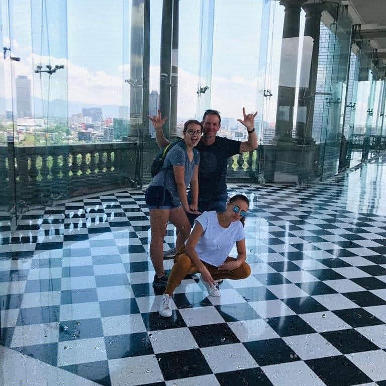
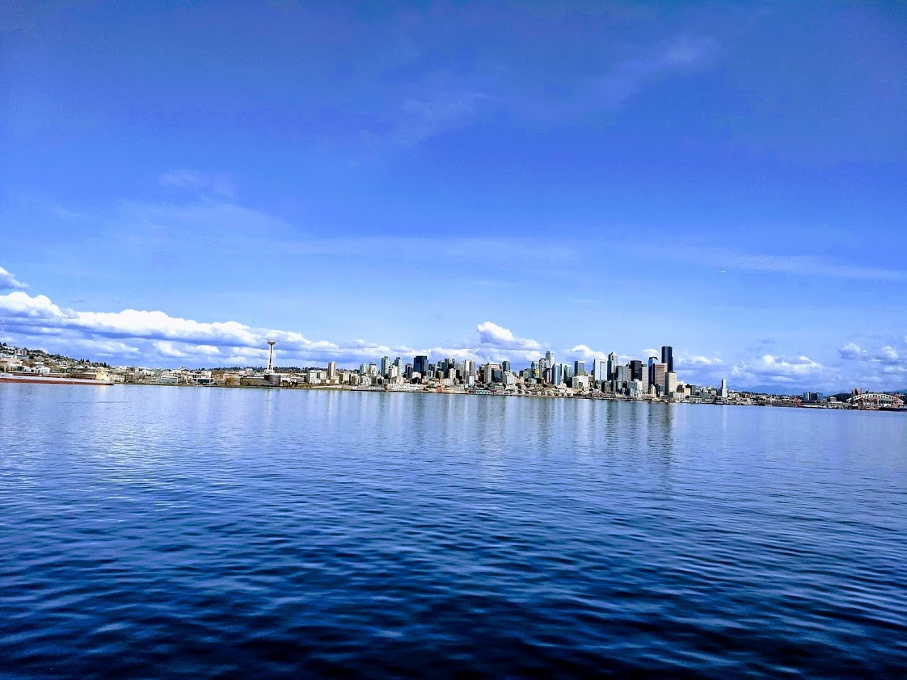
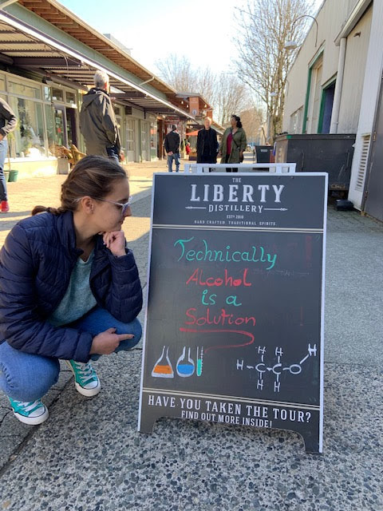
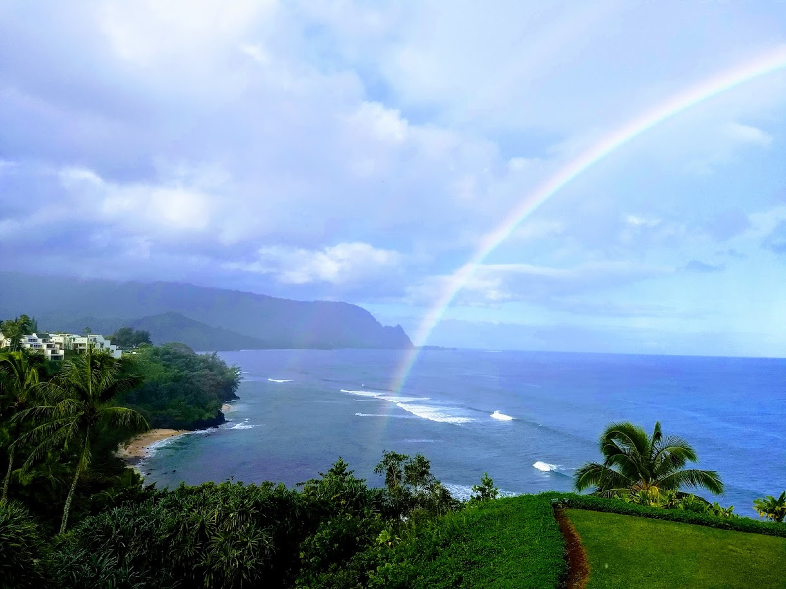
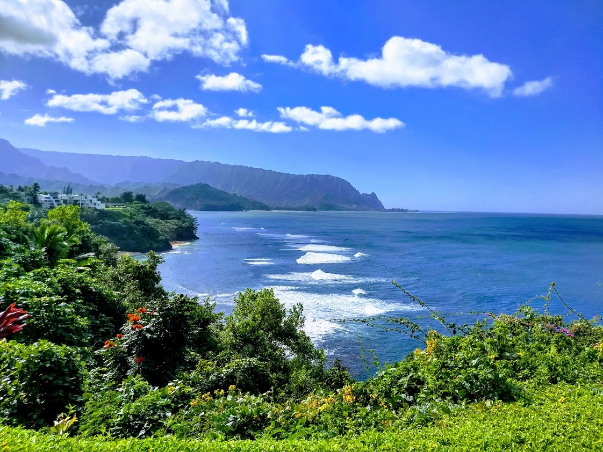
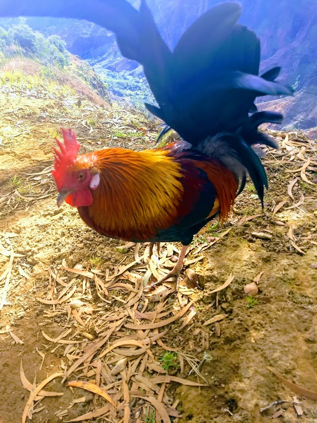
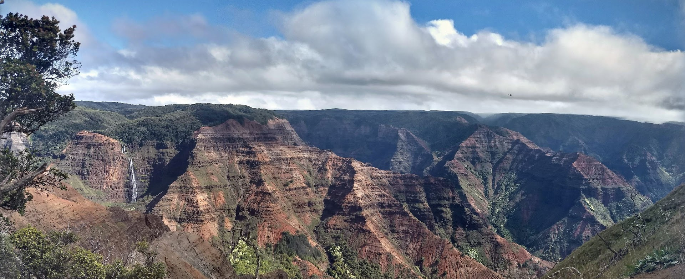
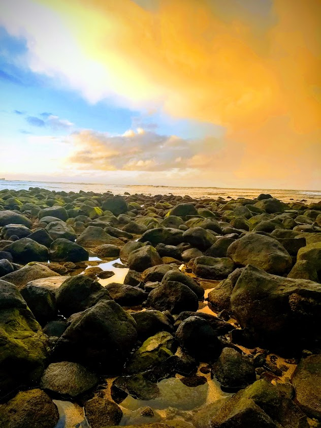
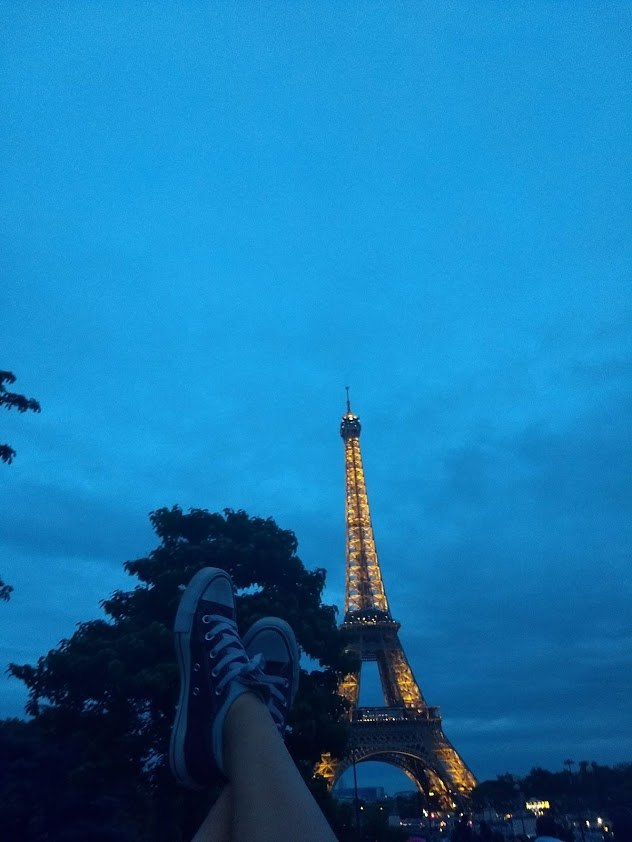
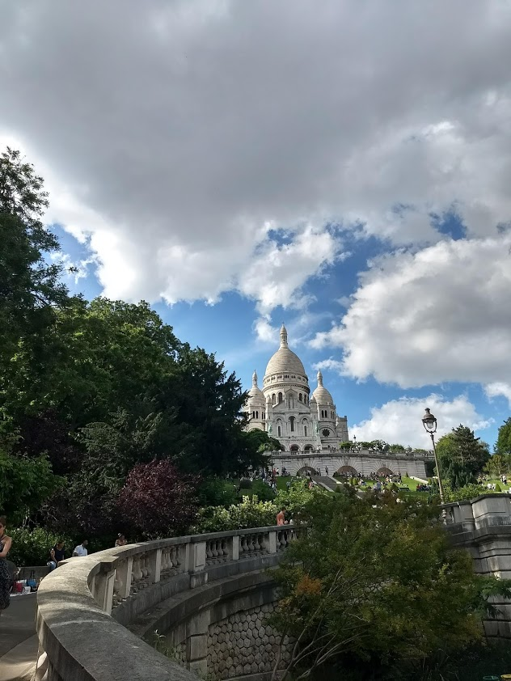

I am a girl who codes from Austin, Tx. I will be in the 11th grade in the fall at the Liberal Arts and Science Academy, and I am looking forward to and terrified of applying to colleges. I live at home with my parents, my younger sister, and my hamster named Churro. When I'm not coding, you can find me listening to music, with my friends, or reading.
I love playing soccer and spending time at the pool (especially Barton Springs) in the summer with my friends. I also enjoy watching Netflix and catching up on new shows, I’m especially excited about the new season of Stranger Things. I also enjoy baking and am working on creating a perfect soufflé, a difficult, yet not impossible task. I also love to travel with friends and family and am *almost* always up for an adventure, whether it’s hiking, scuba diving/snorkeling, skiing, or even just a city trip. I love seeing new places and learning about different cultures and their histories.











Interests:
I am currently dipping my toes into the coding world in the Girls Who Code Summer Immersion Program, a 7-week introduction to coding program. I am also learning German at my high school in hopes that someday I could study abroad there because my mom is a native German and lived there into her late 20’s.